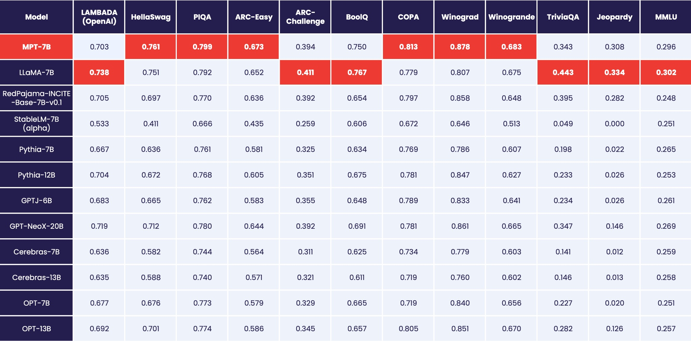
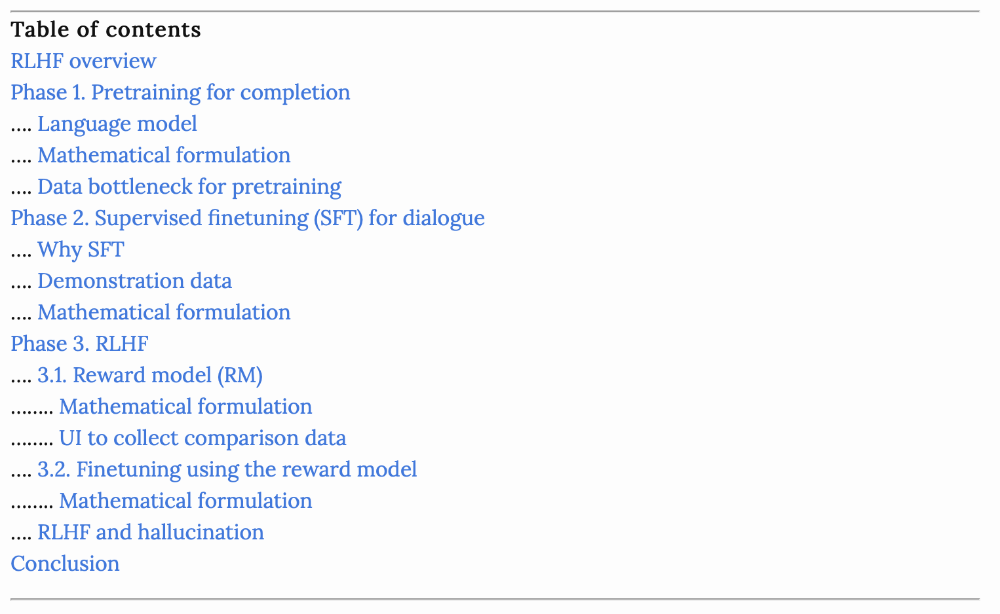

Second issue of the weekly newsletter to help you stay ahead of the times with latest news & updates in the field of AI.
As part of this newsletter, I share with you key updates, projects, GitHub repos, research trends, research papers in the field of Computer Vision, Large Language Models and Stable Diffusion.
Newsletter
Author
Aman Arora
Published
May 8, 2023
Ahead of Times - Issue 1
1 Introduction
Hello and welcome back to the second issue of the weekly newsletter - “Ahead of Times”!
Last week, I announced the first issue and the start of this newsletter to help you cut through the noise and help you keep up to date with the latest advancements in the field of AI.
So, let’s get started!
2 The first open-source commercially usable LLMs are here!
Last week, Together & MosaicML released their own commerically usable open-source LLMs on the same day! What does this mean for everyone? You can now use LLMs that match LLAMA’s quality at work for commercial use-cases! This is huge!
Today’s release includes our first models trained on the RedPajama base dataset: a 3 billion and a 7B parameter base model that aims to replicate the LLaMA recipe as closely as possible. In addition we are releasing fully open-source instruction-tuned and chat models.
MPT-7B was trained on the MosaicML platform in 9.5 days with zero human intervention at a cost of ~$200k.
Curious how the RedPajama effort by Together compared to MosaicML and other LLMs such as StableLM? MosaicML also released a benchmark table that I share below.

From the benchmark table released, it appears that MPT-7B is currectly the best performing large language model in the category across various benchmarks.
3 When A.I. Chatbots Hallucinate
The article called “When A.I. Chatbots Hallucinate” published in NYT (New York Times) is a great introduction to term called “Hallucination”.
In simple words, ‘hallucination’ could also be referred to ‘incorrect completion of the input query’ by the chatbot.
4 ‘The Godfather of A.I.’ Leaves Google and Warns of Danger Ahead
Geoffrey Hinton, one of the pioneers in the field of artificial intelligence, quit Google. From the article published in NYT:
Dr. Hinton said he has quit his job at Google, where he has worked for more than a decade and became one of the most respected voices in the field, so he can freely speak out about the risks of A.I.
Some concerns shared by Geoffrey Hinton in the NYT article:
“He is also worried that A.I. technologies will in time upend the job market.”
“The idea that this stuff could actually get smarter than people is not so far off”
In the NYT today, Cade Metz implies that I left Google so that I could criticize Google. Actually, I left so that I could talk about the dangers of AI without considering how this impacts Google. Google has acted very responsibly.
5 Say Goodbye to Irrelevant Search Results: Cohere Rerank Is Here
On 1st May, 2023, Cohere has launched Cohere Re-rank, that can improve search performance with a single line of code.
It is possible to integrate with existing keyword-based/semantic search system for the first-stage retrieval and integrate the Rerank endpoint in the second stage re-ranking.
Code
# !pip install cohereimport cohere, os# Get your cohere API key on: www.cohere.comco = cohere.Client(os.getenv('COHERE_API_KEY'))# Example query and passagesquery ="What is the capital of the United States?"documents = ["Carson City is the capital city of the American state of Nevada. At the 2010 United States Census, Carson City had a population of 55,274.","The Commonwealth of the Northern Mariana Islands is a group of islands in the Pacific Ocean that are a political division controlled by the United States. Its capital is Saipan.","Charlotte Amalie is the capital and largest city of the United States Virgin Islands. It has about 20,000 people. The city is on the island of Saint Thomas.","Washington, D.C. (also known as simply Washington or D.C., and officially as the District of Columbia) is the capital of the United States. It is a federal district. ","Capital punishment (the death penalty) has existed in the United States since before the United States was a country. As of 2017, capital punishment is legal in 30 of the 50 states.","North Dakota is a state in the United States. 672,591 people lived in North Dakota in the year 2010. The capital and seat of government is Bismarck." ]results = co.rerank(query=query, documents=documents, top_n=3, model="rerank-multilingual-v2.0")results[0]
RerankResult<document['text']: Washington, D.C. (also known as simply Washington or D.C., and officially as the District of Columbia) is the capital of the United States. It is a federal district. , index: 3, relevance_score: 0.9999989>
As per the blog, the model works for 100+ languages and enables great search quality across languages.
7 Mojo may be the biggest programming language advance in decades
Mojo is a new programming language, based on Python, which fixes Python’s performance and deployment problems.
Modular co-founded by Chris Lattner and Tim Davis announced an inference engine that is upto 2.5X faster than TensorFlow and upto 3x faster than PyTorch!
Watch keynote here: https://www.modular.com/
They have also introduced a new programming language called - Mojo! Read docs here.
Also, don’t forget to check out Jeremy Howard’s demo of MOJO. Read more on fast.ai’s blog here
8 RLHF: Reinforcement Learning from Human Feedback

Want to understand how ChatGPT works and why is it so successful? Read Chip Huyen’s blog post on RLHF.
I particularly liked the detail and explanations for all 3 phases of ChatGPT development:
9 Google “We Have No Moat, And Neither Does OpenAI”
Supposedly a very recent leaked document was shared by an anonymous individual on a public Discord server who has granted permission for its republication. This document did the rounds on Twitter & HackerNews!
But the uncomfortable truth is, we aren’t positioned to win this arms race and neither is OpenAI. While we’ve been squabbling, a third faction has been quietly eating our lunch.
Can you guess what this third faction is? Check it out here.
10 Announcing the next wave of AI innovation with Microsoft Bing and Edge
ChatGPT costs $20/month.
Bing Chat just got 10X better than ChatGPT and is free to use.
From Microsoft’s blog, the key updates to Microsoft Bing have been summarised below.
This next generation is defined by:
Opening up Bing to more people by moving from Limited Preview to Open Preview and eliminating the waitlist for trial.
Moving from text-only search & chat to one that is incredibly more visual with rich image/video answers and coming shortly, new multimodal support.
Moving from single use chat/search sessions to multi-session productivity experiences with chat history and persistent chats within Edge.
Opening up platform capabilities so developers and third parties can build on top of Bing to help people take actions on their queries and complete tasks.
11 Conclusion
This brings us to the end of the second issue of the Newsletter!
If you found it helpful, consider subscribing to the blog. You can also buy me a coffee here.
Thank you for your time! See you next week on Monday at 9am AEST!